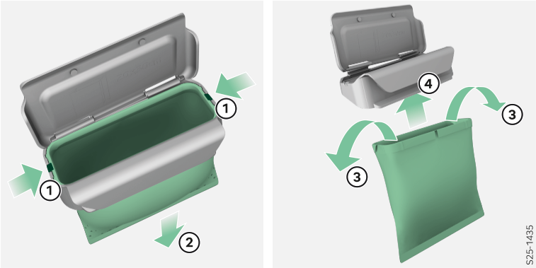

<!-- topicId: 6b07bd36edf928ab0adf42c73fbd46bc_14_fr_FR | type: topic -->
<h1>Remplacement du sac</h1>
<html data-dyxml-version="2"><div lang="fr-FR"><div class="topic-content"><section data-type="topic-allgemein" data-dl-contains="block" id="ID_a2b3728cc421fdc60adf42c70486705e-6b07bd36edf928ab0adf42c73fbd46bc-fr-FR"><p id="ID_2417faebc421fdc60adf42c7476efb0c-6b07bd36edf928ab0adf42c73fbd46bc-fr-FR"></p><div data-role="block" data-type="block" id="ID_c53d272dc421fdc60adf42c71b38f5e0-6b07bd36edf928ab0adf42c73fbd46bc-fr-FR" hasIllu="true"><div data-type="illu" id="ID_7e36e4006a8f2ded0a5ad8493b0dd223-6b07bd36edf928ab0adf42c73fbd46bc-fr-FR"><div data-class="vw-layout-narrow" data-dl-wrapper="figure" id="d6265408e32"><figure id="ID_fa9f813e5a021d74ac144525693c0693-6b07bd36edf928ab0adf42c73fbd46bc-fr-FR" data-role="" data-type="" data-position=""><div><a data-fancybox="group" media-link="" class="fancybox" data-href="../media/img57332dee7c300acfac144525200e1fb7_1_--_--_PNG_3x.png" data-options="{&#34;buttons&#34;:[&#34;fullScreen&#34;, &#34;thumbs&#34;, &#34;close&#34;],&#34;hash&#34;:false}"></img></a></div></figure></div></div></div><div></div></section></div></div></html>